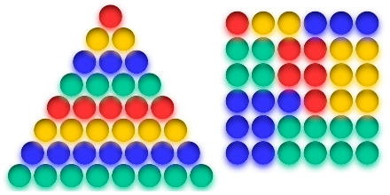
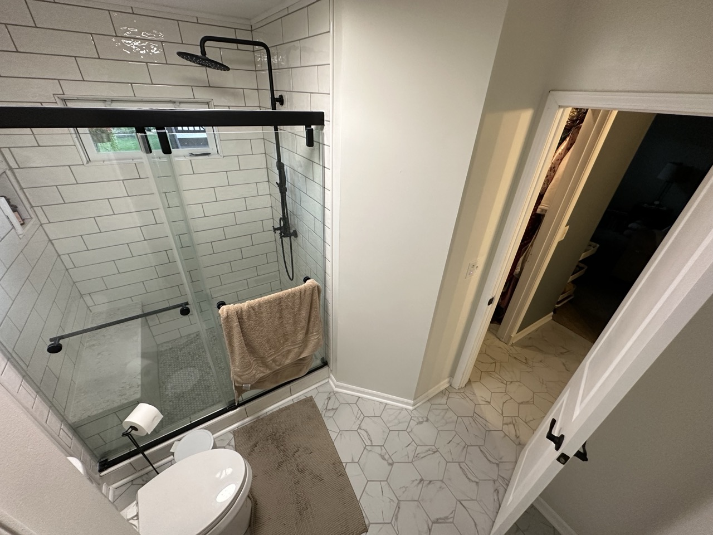
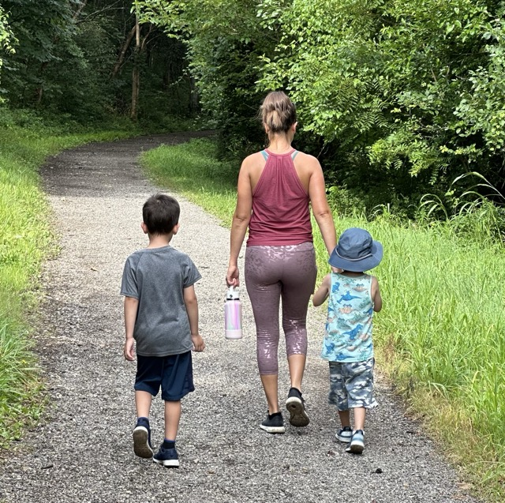
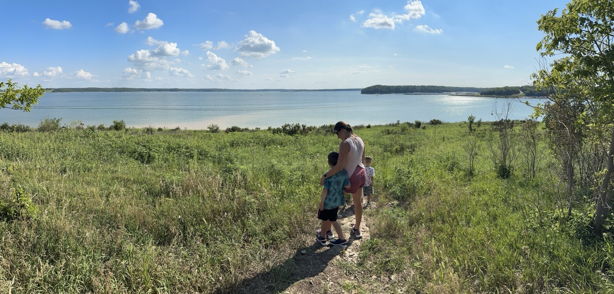
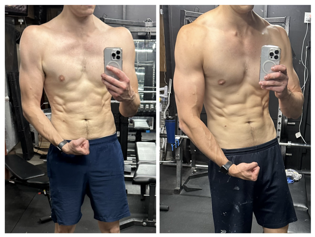

Reviewing 75 Hard*
71 days ago I got a message from Melissa:
Ever wanted to try 75 Hard? - Melissa
Within an hour it was decided - we were doing it. We were about a month into summer, and some structure and a good challenge was never better timed. Although we’ve got a few more days to go before it’s “done”, I have time to write this now, so here it is.
What it is
75 Hard
I overviewed 75 Hard already in 454, but for the sake of completeness, here it is again.
75 Hard is a challenge in which you adhere to the following rules every day:
- Work out for 45 minutes x2 per day, one of them being outdoors
- Follow a diet
- Abstain from alcohol
- Drink a gallon of water (plain water, ice optional)
- Read 10 pages of a non-fiction book (with your eyes, not your ears)
- Take a progress picture every day
The point of all of this is partly about physical fitness, but mostly about mental fitness. It’s about discipline. One day is not so bad, but 75 days in a row is the challenge. It’s a change in lifestyle. One that requires you to live outside your comfort zone daily.
75 Hard Asterisk
We did not do proper “75 Hard” - partly because it’s hard, and partly because we had different goals. I did not “take a progress picture every day”1. I don’t see that as important. I did not work out for a full 45 minutes twice every day - I probably did about half the time. The other half I did 40 minutes of strength training, or I did a 30 minute walk. You ever try doing 45 minutes of cardio outside while taking care of a 3 year old and 5 year old? How does that work? I want my children to have a positive opinion of exercise, and forcing them to walk for 45 minutes when it’s 90+ degrees outside is not something I think would help with that. We did what we could. Always got in 2 things we called workouts, but they weren’t always strenuous2.
So, sure, we did a 75 Hard Asterisk… but it was great. And I think being dogmatic about every single rule to the letter of the law 100% would have made it less enjoyable, which would make me less likely to recommend it or want to continue.
Results
Okay enough preamble, was it good?
Yes.
75 Hard* was excellent. We have enjoyed the heck out of it - despite its hardness. Melissa and I both have given it wildly glowing reviews, agreeing it was one of the best decisions we made. We have spent a ton more time together than we typically would have, as we’ve decided to do most of our workouts together. We explored all sorts of places and things around us that we’ve said “someday we’ll get to that”. We’ve both gotten literally harder. My midsection has trimmed up noticeably. We’ve learned we enjoy walks. We read The Bullet Journal Method, a stellar book. We’ve eaten better. Drank zero alcohol. I feel physically better all the time right now than I have ever before.
We started (and at this point, nearly completed) the “Beachbody” brand’s “Dig Deeper” workout with Shaun T (the dude from “Insanity”, if you’ve heard of it). It was a perfectly timed companion piece to 75Hard. It’s about 45 minutes every day and put me out of my comfort zone with regard to exercising - but also the program is meant to be easy on the joints, which is exactly what I needed.
But 75 Hard wasn’t perfect. It takes a lot of time out of your day to work out twice and read 10 pages. We found that sleep started to suffer. In order to get it all done, we had to push back bedtime pretty frequently.
Infinite Firm
While 75 Hard was genuinely great, it was also not something I’d want to do indefinitely… and I also don’t want to crash out of it. Instead, my off-ramp is something I’m dubbing:
Infinite Firm
- Work out every day
- Do intermittent fasting, except for social reasons
- No alcohol on work nights
- Drink a gallon of water, at least 1/2 of which is plain.
- Spend 30+ minutes outside every day.
- Read a book or meditate for 10 minutes
Work Out Every Day
I think one of the biggest changes that 75 Hard has instilled in me is the idea that working out every day is not overkill, but actually a good idea. If you work out every day, you don’t have to wrestle with the urge to say “well, I’ll just make today a rest day” then get yourself into trouble with pushing your 3 weekly workouts back and back until you’re doing Friday, Saturday, and Sunday. That doesn’t work. What does work (for me, a least) is taking away the “not today” excuse. This is also necessary if I’m to achieve my fitness goals of maintaining good overall functionality. If you’re only working out 3 to 4 times per week, it’s hard to do strength, cardio, and mobility training to any meaningful extent. Working out daily allows for something like 3-4 strength training days per week, 2-3 cardio days per week, and one day spent on flexibility/yoga.
Do Intermittent Fasting, Except for Social Reasons
I like intermittent fasting. It works for me… but I have been annoyed on a couple of occasions where I’ve had to say no to things like birthday cake after 7pm. I think the ~10:30am to ~6:30pm core works for days at home. It keeps me from late night snacking, and it prevents me from doing cheap and easy but terrible for you breakfast foods… but an occasional night out or breakfast before a day with friends isn’t going to ruin anything.
No Alcohol on Work Nights
Pretty obvious. I have found I haven’t really missed drinking much, but there have been a couple of occasions where a drink would have been nice and non-goal killing - but on the whole drinking during the week is not necessary nor good.
Drink a Gallon of Water, at least 1/2 of Which is Plain
This is something that’s on 75 Hard just to force people to realize how much water they don’t drink. For me it was pretty easy, other than it prevented me from counting protein powder, or preworkout water as water. So I’ve wound up drinking the gallon AND a couple additional water bottles full. I don’t need clear pee to feel healthy. I don’t drink soda. That’s good enough.
Spend 30+ Minutes Outside
This is taking the place of a 2nd workout, which is done outside. Being outside is good. Humans weren’t meant to do what we do every day. Getting outside and walking around was possibly the single best result from all of 75 Hard. It always elevates my mood and my energy levels. It also got me out of the neighborhood and exploring trails nearby. I’ve found lots of things that were hiding right behind some trees. Geocaching is cool. Also having an additional reason to make lawn work feel “good” is a big win. Now I can mow the grass and cross of both “work out” and “be outside”.
Reading a Book or Meditate for 10 Minutes
I’m not sure what to do with this one. For one, I was actually already doing 10+ pages of non-fiction reading every day before 75 Hard started. That resulted in this series of notes. I think the intended benefit of 75 Hard’s “Read 10 Pages of a non-fiction or self-help book every day” is twofold:
- Read material that is good for you to know
- Make time to slow down to engage with something requiring an actual attention span
The first, I think I’m covering by myself. The second, not as much. So, making some time each day to slow down and read something or just sit with my thoughts is probably a good & worthwhile thing to do.
36 is an Interesting Number
36 is the first3 square triangle number. Meaning, it’s the first number you can do this with:

It’s also the sum of the first three cubes: It’s a highly composite number, divisible by 1, 2, 3, 4, 6, 9, 12, 18, & itself.
36 degrees is 1/10th of a circle.
Oh also I’m 36 years old now. So. Cool.
Or not.
Top 5: Photos from 75 Hard
5. The Bathroom Remodel Completion
We did all this. Also there’s a new vanity and all sorts of other work you can’t see here. The master bath went from the least favorite to maybe the favorite part of my house.

4. Exploration
There are all sorts of trails around Lawrence, it turns out. We found great places to take a walk.

3. The Lawrence Loop
Actually not pictured here, but we rode bikes from Lawrence to Clinton Lake on the Loop. First time riding what will hopefully become a staple of my fitness regiment.

2. Family Fitness & Fun
This photo definitely wouldn’t have happened without the need to get exercise outdoors.
1. Before & After
The best example I have.

Quotes:
I hate to pull patriarchy here, but Dairy Queen is the king of ice cream cakes - Derek
You know what I sadly have a feeling about? Sharks maybe don’t exist anymore. - My five year old
These guys have a talkative half-life of 100 million years - Fintel
Footnotes
-
Although I probably did most days, out of sheer vanity. ↩
-
Physically strenuous. Walking for 20 minutes coaxing a 5 year old to move more than 1 mile per hour is very mentally strenuous. ↩
-
Technically “1” is the first square triangle number. You can draw any arbitrary shape around 1, though. So that’s boring. ↩